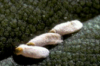

| Home |
TAPIOCA |
MAJOR PESTS |
| 1. Cassava scale |
| 2. Whitefly |
| 3. Spiraling whiteflies |
| 4. Mealy bug |
MINOR PESTS |
| 1. Thrips |
| 2. Red spider mites |
| Questions |
| Download Notes |
TUBER VEGETABLES :: MAJOR PESTS::CASSAVA SCALE
1. Cassava scale : Aonidomytilus albus (Diaspididae: Hemiptera)
Distribution and status: India, Africa.Major pest in tapioca growing regions
Damage symptoms
Scales infest stems. Leaves of attacked plants become discoloured and dry up. In severe cases desiccation of the stem and death of plants occur. Stunting of the plants results from thousands of the scales feeding on the stems.
Aonidomytilus albus |
Bionomics
This is a hard scale, oval and mussel-like. Male is winged. Eggs are laid inside scale. They hatch in 4 days. Nymphs are active and move on stems spreading to new areas of new stems. They settle close to one another, feed on sap and become full grown in 20 to 25 days. Pest is distributed through movement of crawlers, winged males and infested stems.
|  |
Management
- Select pest-free setts for planting
- Collect and burn the stems infested with scales
- Encourage activity of coccinellid predators, Chilocorus nigritus
- Dip setts in methyl demeton 25 EC or dimethoate 30 EC 0.05% or malathion 50 EC 0.1%